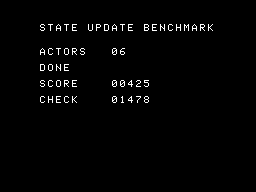
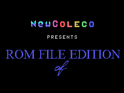
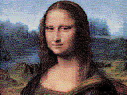

COLECOVISION TOOLCHAIN DASHBOARD · SEPTEMBER 2026
Different tools, different priorities.
Amy Studio, CVBasic, z88dk, ugBASIC, devkitSMS, PVColLib, and NewColeco can all create ColecoVision software. This dashboard compares evidence, not promises.
The tests use each tool’s strongest validated native settings. Occupied size excludes cartridge padding. Smaller does not automatically mean faster or better.
REPRODUCIBLE EVIDENCE
Five samples, seven solutions.
| Occupied ROM bytes | Amy Studio | NewColeco | PVColLib | devkitSMS | CVBasic | z88dk | ugBASIC |
|---|---|---|---|---|---|---|---|
| Hello World | 238 | 795 | 1,106 | 1,507 | 1,466 | 3,687 | 5,245 |
| Warrior bitmap | 3,254 | 3,643 | 4,525 | 4,713 | 4,948 | 4,976 | 18,034 |
| Controller monitor | 595 | 932 | 1,194 | 1,430 | 1,695 | 4,016 | 5,887 |
| Sprite metasprite | 983 | 1,142 | 1,304 | 1,681 | 1,845 | 2,902 | 7,718 |
| Gameplay state update | 1,460 | 1,253 | 1,308 | 2,126 | 2,453 | 2,878 | 10,479 |
| Five-sample total | 6,530 | 7,765 | 9,437 | 11,457 | 12,407 | 18,459 | 47,363 |
All 35 ROMs booted and ran for 180 NTSC frames in GearColeco. Warrior matches pixel for pixel, the metasprite passes the shared VRAM/SAT oracle, and every state-update ROM reaches state 1, 13 collisions, score 425, and checksum 1478. Amy Studio has fifteen verified direct-to-VRAM codecs. Sources, assets, complete ROMs, occupied sizes, and hashes are included in one archive.
Download evidence ZIP Read detailed resultsAMY SOURCE + GEARCOLECO
All five benchmark cases.
Hello World
text screen
backdrop sky blue
print centered at 11, "HELLO, WORLD!"
screen on
Warrior bitmap
picture WarriorPicture:
pattern from "@project/warrior.pattern.zx0" codec zx0
color from "@project/warrior.color.zx0" codec zx0
end picture
show picture WarriorPictureExomizer proof: the evidence archive contains this equivalent Amy source, both .exo assets, and the exact 3,319-byte ROM for direct testing.
picture WarriorExomizer:
pattern from "@project/warrior.pattern.exo" codec exomizer
color from "@project/warrior.color.exo" codec exomizer
end picture
show picture WarriorExomizer
Controller monitor
InputLoop:
wait
if keypad(1) <> 255 then
backdrop magenta
elseif joypad(1).fire then
backdrop light red
elseif joypad(1).up then
backdrop light green
else
backdrop dark blue
end if
goto InputLoop
Animated three-color metasprite
A metasprite is one visual actor assembled from multiple hardware sprites. This example overlaps three 16x16 sprites for white, yellow, and black layers.
u8 PlayerX = 120
u8 PlayerY = 88
u8 AnimationFrame = 0
sprites simple
set sprite count 3
MainLoop:
wait
if joypad(1).left then PlayerX -= 1
if joypad(1).right then PlayerX += 1
AnimationFrame = 1 - AnimationFrame
set sprite 0 to PlayerY,PlayerX,0,15
set sprite 1 to PlayerY,PlayerX,4,11
set sprite 2 to PlayerY,PlayerX,8,1
update sprites
goto MainLoopGameplay state update
This deterministic six-actor workload measures state dispatch, record-array updates, timers, movement, collisions, score, and checksum rather than rendering speed.
state machine WorldBehavior:
Running calls UpdateActors
Bonus calls UpdateBonus
end state machine
ActorState Actors[6]
u16 Score = 0
u16 Checksum = 0
for Tick = 0 to 47
dispatch WorldMode using WorldBehavior
' UpdateActors handles records, timers, movement and collisions.
next
GRAPHICS II COMPRESSION CORPUS
42 pictures, 15 codecs, 630 exact checks.
Every 12,288-byte Pattern + Color picture round-tripped exactly. Podiums rank first-use ROM bytes: payload plus one linked decoder. Gallery cards show the three smallest payloads.
| Rank | Codec | Payload total | Decoder | First-use places (pictures) | ||||
|---|---|---|---|---|---|---|---|---|
| 1st | 2nd | 3rd | 4th | 5th | ||||
| 1 | Exomizer 2 | 161,374 | 226 | 21 | 12 | 2 | 3 | 1 |
| 2 | ZX0 | 166,556 | 133 | 21 | 18 | 1 | 2 | 0 |
| 3 | DAN2 | 166,923 | 212 | 0 | 0 | 7 | 13 | 10 |
| 4 | DAN3 | 167,186 | 205 | 0 | 0 | 16 | 5 | 11 |
| 5 | DAN1 | 167,240 | 205 | 0 | 3 | 4 | 9 | 16 |
| 6 | MegaLZ | 171,016 | 162 | 0 | 0 | 1 | 1 | 1 |
| 7 | aPLib Compact | 171,484 | 244 | 0 | 0 | 0 | 0 | 0 |
| 8 | Pletter | 171,751 | 212 | 0 | 0 | 0 | 0 | 0 |
| 9 | ZX7 | 171,788 | 136 | 0 | 0 | 2 | 9 | 3 |
| 10 | BitBuster | 172,941 | 166 | 0 | 0 | 0 | 0 | 0 |
| 11 | ZX1 | 176,562 | 127 | 0 | 4 | 5 | 0 | 0 |
| 12 | ZX2 | 177,582 | 115 | 0 | 5 | 4 | 0 | 0 |
| 13 | LZF | 193,412 | 117 | 0 | 0 | 0 | 0 | 0 |
| 14 | Nibble | 214,555 | 115 | 0 | 0 | 0 | 0 | 0 |
| 15 | MDK-RLE | 253,859 | 46 | 0 | 0 | 0 | 0 | 0 |
Most, median, and least compressible

NewColeco ROM File Edition
1. ZX0: 901 bytes
2. Exomizer 2: 904 bytes
3. DAN2: 909 bytes
Cake
1. Exomizer 2: 2,935 bytes
2. ZX0: 2,958 bytes
3. DAN2: 2,999 bytes

mona lisa
1. Exomizer 2: 9,208 bytes
2. ZX0: 9,426 bytes
3. DAN3: 9,490 bytes
Selection is mechanical. Exomizer uses a 226-byte ROM decoder plus 156 bytes of CPU RAM. Amy Studio reserves that workspace at a 256-byte boundary; its generated address varies and must not overlap other RAM. The detailed PDF contains all 42 converted images and per-picture evidence.
AMY'S LEGACY
The compact philosophy predates Amy Studio.
NewColeco links Amy's historical CRTCV, CVLIB, GETPUT 1.1, and DAN2 code without ABI changes. Its Hello, bitmap, and controller ROMs remain small and run correctly today. The exact Warrior test confirms its direct-to-VRAM DAN2 path. Amy Studio continues that BIOS-aware, original-hardware approach with a modern language, integrated tools, and debugging.
PVCOLLIB EVIDENCE
A broad ColecoVision C library, not only a ROM-size entry.
| Area | Verified local API or example | Status |
|---|---|---|
| Graphics | Text and bitmap modes, direct VRAM, sprites, hitbox collisions | Source verified; bitmap runtime exact |
| Sprite pressure | 32-entry SAT and NMI sprite swapping for the four-per-line limit | Source verified |
| Controllers | Both joypads, keypads, four fire buttons, and both spinners | Source verified; visual ROM boots |
| Sound | BIOS-style sound tables, sequenced music, concurrent SFX areas | Source and examples verified |
| Compression | RLE, Pletter, DAN1, DAN2, and DAN3 direct-to-VRAM APIs | RLE exact; other stream pairings not ranked yet |
| Expanded hardware | MegaCart, SGM, Phoenix, and F18A support | Credited separately from stock tests |
Stock and expanded hardware
The measured ranking targets an original ColecoVision with its TMS9918A, SN76489, 1 KB RAM, BIOS, and compact cartridge. Expanded hardware remains a valid strength, but is reported separately.
| Extension | Examples of support | Comparison scope |
|---|---|---|
| MegaCart / banking | CVBasic, z88dk, devkitSMS, PVColLib | Valid, excluded from stock-ROM ranking |
| F18A video | PVColLib APIs and examples | Modified or compatible clone systems |
| SGM sound and RAM | CVBasic and PVColLib paths | Expansion or compatible clone systems |
| ADAM / extra RAM | Machine-specific runtime work required | Future separate target, not stock ColecoVision |
Philosophy
| Area | Amy Studio | CVBasic | z88dk +coleco |
|---|---|---|---|
| Primary goal | Integrated ColecoVision game authoring | Portable BASIC game development | General-purpose Z80 C development |
| Target reach | ColecoVision-first | Multiple classic consoles and computers | Large family of Z80 targets |
| Typical workflow | Browser IDE, editors, compiler, debugger, ROM tests | Compiler plus editor and emulator | CLI toolchain plus editor and emulator |
| Hardware philosophy | Stock ColecoVision and compact cartridges | Portable abstractions with platform extensions | Low-level C control and broad libraries |
Language and game systems
| Capability | Amy Studio | CVBasic | z88dk +coleco |
|---|---|---|---|
| Numeric types | Explicit 8/16/32-bit integers, fixed-point, FP5, packed BCD | Game-oriented 8/16-bit integers | C integer families and software floating point |
| Data structures | 1D/2D arrays, records, record arrays, RAM overlays | Arrays and BASIC data constructs | C arrays, structs, unions, and pointers |
| Functions | Typed parameters, returns, ref parameters, recursion | Procedures and BASIC function facilities | Full C functions and calling conventions |
| State management | Typed state machines, scenes, overlay-aware RAM | Conventional BASIC control flow | C control flow and manual architecture |
| Input | Joypad, keypad, spinner, pressed/released edges, controller-aware lowering | Joypad, keypad, spinner | C input APIs; advanced behavior is generally manual |
| Sprites | High-level sprites, collision helpers, opt-in flicker with stable ranges | High-level sprites and flicker support | TMS9918 sprite APIs and manual game logic |
| Sound | BIOS sound tables, Tiny Sound, DSound; visual music workflow still improving | Sound and integrated music commands | PSG libraries and external conversion workflows |
Production workflow
| Capability | Amy Studio | CVBasic | z88dk +coleco |
|---|---|---|---|
| Integrated browser IDE | Yes | No official integrated IDE | No official integrated IDE |
| Source debugging | Breakpoints, ASM stepping, memory/VRAM, rewind, profiling | External emulator workflow | External emulator/debugger workflow |
| Automated ROM tests | GearColeco-backed runtime tests across optimizer profiles | Project-specific external setup | Project-specific external setup |
| Graphics workflow | Integrated tile, sprite, animation, bitmap, and import tools | External/companion conversion tools | External tools and custom pipelines |
| Compression | Fifteen integrated direct-to-VRAM codecs, including Exomizer 2 | Pletter-centered workflow | ZX-family tools and C/ASM libraries |
| ROM beyond 32 KB | Not a current goal | Banked ROM support | Banked/MegaCart options |
AMY STUDIO FITS WHEN
You want depth on the ColecoVision.
You value original-hardware constraints, integrated graphics and compression, readable game-oriented syntax, explicit RAM accounting, source debugging, and an environment shaped by decades of ColecoVision practice.
Open Amy StudioALTERNATIVES FIT WHEN
You need portability or a general C ecosystem.
CVBasic favors portable game-oriented BASIC. z88dk provides broad C and Z80 tooling. ugBASIC offers ambitious cross-platform BASIC features. devkitSMS and PVColLib provide SDCC game-library workflows.